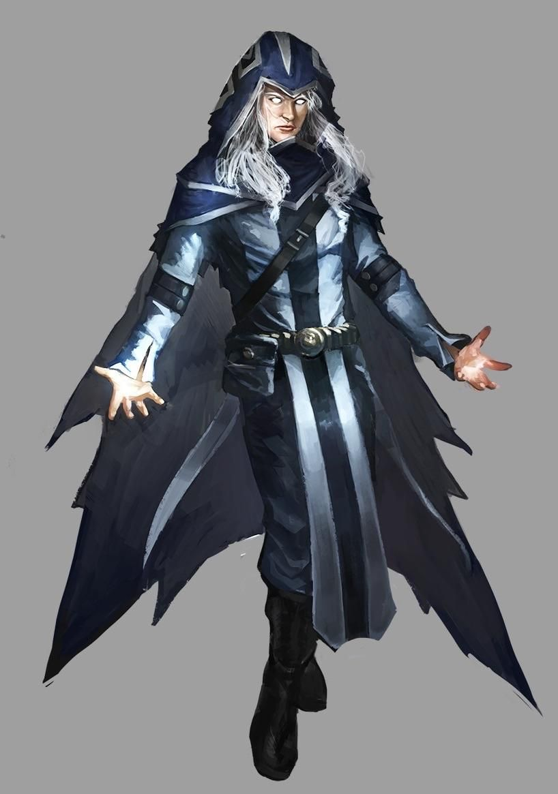

 The past of this shape-shifting assassin is shrouded in an enigma. His actions at times defy common sense and even the concept of reality, yet through these actions he acquires more and more power. He is an aasimar, that are extinct within the borders of Alir lost to their homeland of the Empire of Dawn. Upon escaping his former employers at Cirque Medrano Eliwel, under the alias Phil, joined a group of adventurers, to achieve his penumbral goals.
Powers
1) Consciousness beyond flesh
Phils inate abilities are truly terrifying. With a mere thought he is able to bend reality to his will.
2)Directives of the Dominion
Directives Implanted in the mind of Phil with certain triggers, making him into a machine of death.
3)Hăģ life
Upon surviving a deadly Hag brew, Phil felt a strange sideeffect. Now he is also a Hag - spirit of mischief.
By absorbing Myxell, Phil became an aspect of Life within the Spires.
4)Ethereal Curator
Unlike Therakir, despite having the capacity, Phil cannot see souls. However the prophesy states clear- he is Therakirs future.
Age: 16; Height: 1.77m; Weight: 75kg. Str:10 Dex:16 Con:10 Int:18 Wis:15 Cha:14